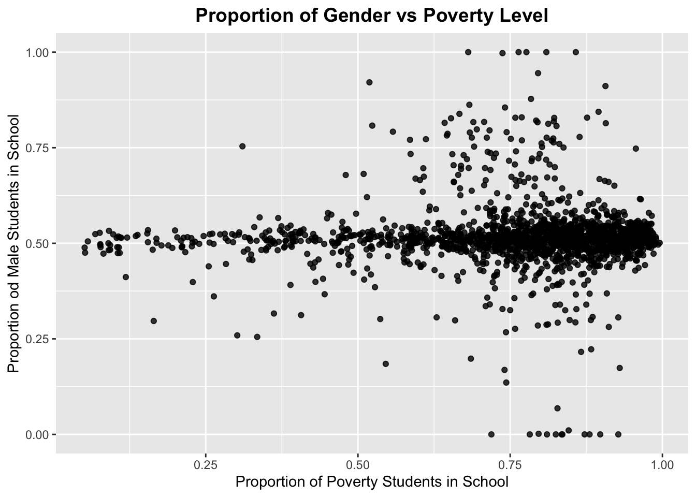

Chapter 3 Data transformation
3.1 Removing Incomplete Schools
Based on the exploratory data analysis result we obtained in the last chapter, we know that there are schools that does not have observation for each of the five academic years, which complicates analysis process if we want to conduct time series analysis. There are 1834 schools included in the data set and 1718 of them have observations for all five years, which constitutes over 93% of all schools. Thus, we choose to directly remove those schools that do not have full observations.
3.2 Adding features
3.2.1 Location of School
Since the first column specifies DBN(District Borough Number) of each school, we firstly use it to generate a new location variable. According to the DBN assigning system, the Borough is the capitalized letter in the string. K represents Brooklyn district, X represents the Bronx district, Q represents the Queens district, M represents the Manhattan district, and R represents the Staten Island district. During transformation, we used str_detect function in the stringr package to check for ocurrences of each Borough letter and assign the corresponding school with a location identifier in terms of the district.
After specifying the location of school, we can first get a capture of school number in different Borough among different academic years in our data source. The number of schools by year and location are shown below:

3.2.2 Type of School
As previously mentioned in Ch2, we can use the number of students enrolled in different grades to judge the type of school. In the dataset, the number of students in different grade are measured from Grade PK to Grade 12. We use the criteria below to classify the type of School.
| Type of School | Grades Included |
|---|---|
| Pre School Learning | Grade PK |
| Elementary School | From Grade k to Grade 5 |
| Middle School | From Grade 6 to Grade 8 |
| High School | From Grade 9 to Grade 12 |
## [1] 8590 44